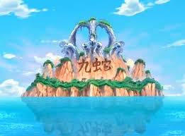

Tripulación de los Sombrero de Paja
Monkey D. Luffy
Capitán de la tripulación. Su sueño es convertirse en el Rey de los Piratas. Tiene habilidades elásticas debido a haber comido la Fruta del Diablo Gomu Gomu no Mi.
Roronoa Zoro
Espadachín. Aspira a ser el mejor espadachín del mundo. Utiliza un estilo de lucha con tres espadas llamado Santoryu.
Nami
Navegante. Su sueño es crear un mapa del mundo completo. Es experta en navegación y clima.
Usopp

Francotirador. Quiere convertirse en un valiente guerrero del mar como su padre. Es inventor y tiene una gran puntería.
Sanji

Cocinero. Sueña con encontrar el legendario mar All Blue. Es un experto en cocina y combate con las piernas.
Tony Tony Chopper

Médico. Un reno que comió la Fruta del Diablo Hito Hito no Mi, lo que le permite transformarse en una forma humana. Quiere curar todas las enfermedades.
Nico Robin

Arqueóloga. Su objetivo es descubrir la verdadera historia del mundo descifrando los Poneglyphs. Tiene la habilidad de la Fruta del Diablo Hana Hana no Mi, que le permite hacer crecer partes de su cuerpo en cualquier superficie.
Franky

Carpintero. Sueña con construir un barco capaz de navegar por todo el mundo. Es un cyborg con habilidades mecánicas avanzadas.
Brook

Músico. Un esqueleto viviente que comió la Fruta del Diablo Yomi Yomi no Mi, lo que le permitió volver a la vida. Sueña con reunirse con su antigua ballena amiga, Laboon.
Jinbe
Timonel. Un hombre-pez y ex-capitán de los Piratas del Sol. Sueña con la coexistencia pacífica entre humanos y hombres-pez.
Lugares Icónicos
East Blue
- Villa Fushia: Pueblo natal de Luffy.
- Shells Town: Donde conocen a Zoro.
Grand Line
- Whisky Peak: Ciudad de cazadores de recompensas.
- Little Garden: Isla de dinosaurios y gigantes.
- Drum Island: Isla nevada donde se une Chopper.
Arabasta
- Alubarna: Capital del Reino de Arabasta, donde Luffy pelea contra Crocodile.
Skypiea
- Upper Yard: Isla en el cielo donde luchan contra Eneru.
Water 7
- Water 7: Ciudad de carpinteros, hogar de Franky.
- Enies Lobby: Sede del Gobierno Mundial donde rescatan a Robin.
Thriller Bark
- Thriller Bark: Isla flotante y hogar de Gecko Moria.
Sabaody Archipelago
- Sabaody: Archipiélago donde se encuentran con los Tenryuubito y son separados por Kuma.
Amazon Lily
- Amazon Lily: Isla de mujeres guerreras, hogar de Boa Hancock.
Impel Down
- Impel Down: Prisión subterránea donde Luffy intenta rescatar a Ace.
Marineford
- Marineford: Sede principal de la Marina donde se lleva a cabo la guerra para rescatar a Ace.
Isla Gyojin
- Fishman Island: Isla submarina donde enfrentan a Hody Jones.
Punk Hazard
- Punk Hazard: Isla dividida entre fuego y hielo, donde se enfrentan a Caesar Clown.
Dressrosa
- Dressrosa: Reino gobernado por Donquixote Doflamingo.
Zou

- Zou: Isla sobre un elefante gigante, hogar de los Mink.
Whole Cake Island
- Whole Cake Island: Territorio de Big Mom, donde Sanji es llevado a la fuerza.
Wano
- Wano: País aislado inspirado en el Japón feudal, donde se enfrentan a Kaido.